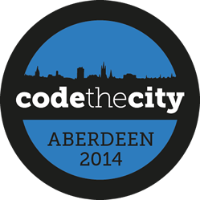

Access to services is one of the key benefits of locating in a city, but many services are difficult to access. Knowing that they exist, finding where they are, when they are, and who is involved can be a struggle.
We believe that by bringing coders and designers together with community members and service providers we can have a positive impact on life in the city by making open data more available, and more useful.
Code The City is a 48 hour civic hacking event where anyone interested in making our cities better can come together in the same physical spance to see what they can create in a weekend. Designers, coders, scientists, community members, service providers and anyone else with an interest in improving our cities are welcome to attend.
People form multidisciplinary teams over the course of the weekend to collaborate on projects. Anchored in the real needs of the community, they test assumptions, find ideas, and create working prototype solutions and services.
Supported by experts in open government data, service design, community needs and service provision - participants have opportunity to work with interesting people, learn new skills, and produce valuable projects with social value. Code the City is about long term impact, so ideas generated at one event can be picked up and progressed at another.
We have an experienced team including representation from University of Aberdeen, Aberdeen City Council, local creative and computing groups. All have experience of planning and running hackdays, conferences and developer practice days.
We expect to welcome around 30-40 people for the weekend. We expect approx 50% coders, 30% community / gov experts and 20% service designers. Outputs from the event will be shared widely with the open data community, and in particular the open government data (OGD) community in local government across europe.
Code the City isn't a one off event. We are currently investigating dates for a follow up event in Aberdeen later in the year to build on projects delivered at this first weekend. We have published open source materials to enable anyone to run a Code the City event in their city. Code the City is a grassroots network of people who are enthused by using code to better the lives of everyone in our cities.
We are fortunate to have support from University of Aberdeen and Aberdeen City Council in place already, and have a great core team of volunteers in place to run the weekend. We need additional funding to cover all the costs of the weekend, to allow all this enthusiasm to deliver results.
If you would like to help support this worthwhile event please get in touch. Contact steve@refreshaberdeen.com for more information.